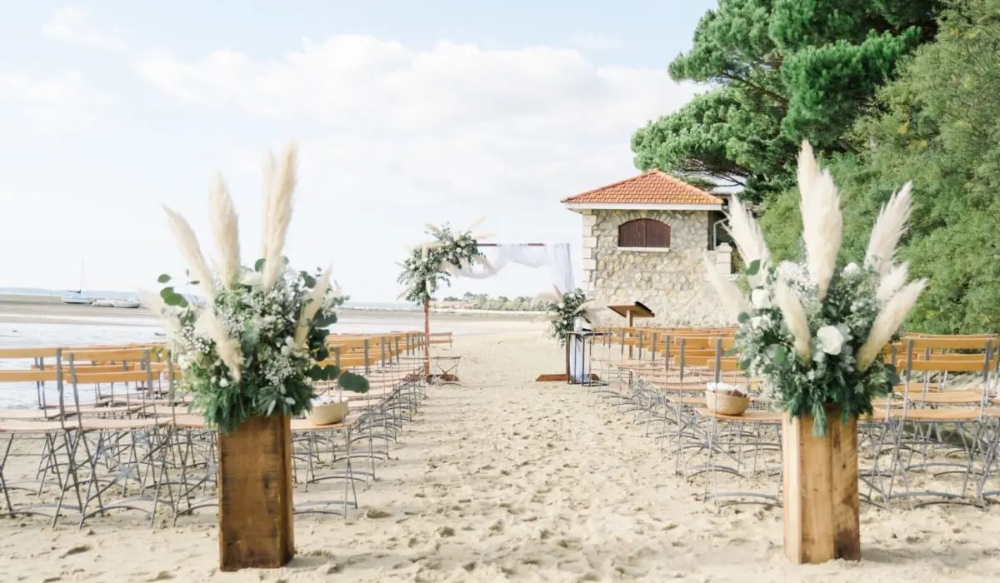
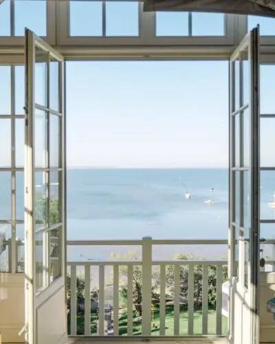

Vous aimez sentir la fraîcheur des embruns, entendre le bruit des vagues et vous souhaitez en profiter pour votre mariage ? Pas de problème, craquez pour des lieux insolites où se marier au bord de la mer en Gironde !
La Gironde, un lieu où se marier ?
Les mariages à la plage ont le vent en poupe et de nombreux couples choisissent de se dire « oui » les pieds dans l’eau. C’est pour son ambiance estivale et terriblement romantique que ce lieu séduit de plus en plus. Menant directement sur l’Atlantique, la Gironde s’impose comme une région idéale et regorge de lieux de rêve pour l’occasion. Vous pourrez alors opter pour le Bassin d’Arcachon ou alors pour des plages comme Lacanau, plus semblables aux plages des landes, à vous de choisir !

Il existe plusieurs possibilités pour se marier en bord de mer. Par exemple, vous pourrez organiser votre cérémonie laïque sur la plage. En installant une arche face à l’eau, vos invités auront une vue à couper le souffle sur vous deux en train de prononcer vos vœux face à la mer et vous obtiendrez de magnifiques photos pour immortaliser ce jour si particulier. N’oubliez pas de soigner votre décoration et faites en sorte qu’elle corresponde à votre thème autour de la plage, en intégrant des éléments naturels comme des coquillages, des fleurs blanches, des cordages, etc…
Je suis installée en région bordelaise depuis plusieurs années et en tant que wedding planner, j’ai pu organiser de nombreux mariages au bord de l’eau dans la région. Mais en plus d’organiser des mariages et de m’occuper de la coordination du jour J, je suis aussi décoratrice de mariage. C’est -à -dire que si vous le désirez, je pourrais prendre en charge votre décoration de mariage et vous proposer une offre sur mesure sur le thème de la plage par exemple !
Alors si vous avez besoin d’idées de décoration ou que vous souhaitez vous faire accompagner pour l’organisation de votre mariage, n’hésitez pas à me contacter.

Un air marin pour votre mariage
Après des mois de restrictions sanitaires, tout le monde a à présent envie de sortir et de voir du paysage. Et quoi de mieux que de se marier à l’air marin sur une « plage » de sable chaud ? Que ce soit pour sa cérémonie laïque ou pour la journée entière, toutes les options sont envisageables. La région Bordelaise regorge de lieux incroyables pour échanger vos vœux. Du Cap Ferret au bassin d’Arcachon, il est impossible de ne pas trouver votre plage idéale en Gironde.
Un mariage sur les plages Bordelaises
Comment pouvoir organiser son mariage les pieds dans l’eau aux alentours de Bordeaux cet été ? Se passer la bague au doigt les pieds dans le sable ? C’est totalement possible. Souvent désigné comme inaccessible à cause de l’image de luxe, les mariages sur la plage font aujourd’hui rêver plus d’un. Elles sont désignées par des lieux extrêmement romantiques et qui ont attiré ces dernières années énormément de monde en passant par Pascal Obispo ou Ingrid Chauvin. Un des lieux mythiques de la région du Ferret est la cabane Bartherotte qui a attirée beaucoup de personnalités.

Besoin d'aide pour trouver des lieux insolites ?
En tant que Wedding planner et Wedding designer, je peux complètement vous aider à organiser votre mariage les pieds dans l’eau ainsi que de réaliser la décoration idéale pour cette journée si spéciale. Que votre mariage soit sur le thème bohème ou romantique, il peut totalement se fondre dans cet univers si relaxant et magique au bord de l’eau. La Villa La Tosca sera ravie de vous accueillir.
De la décoration de votre lieu de cérémonie laïque à votre lieu de réception, de nombreux moyens peuvent être mis en place pour transformer votre mariage en une journée idéale. Des clichés des comédies romantiques américaines à votre propre simplicité, tous les exemples sont bons pour se dire oui en écoutant le bruit des vagues sur le bateau »Le Côte d’Argent ». En panique à l’idée d’organiser un si bel événement ? N’hésitez pas à me contacter par mail où je me ferais une joie de répondre à vos questions !
Lovely Day Event c'est plusieurs types de prestations
L'organisation de mariage
Je vais intervenir sur toutes les étapes de vos préparatifs et vous guider dans vos choix. Je suis force de proposition pour que votre mariage ne ressemble qu’à vous.
Décoration de mariage
Créative et passionnée, je suis certifiée Wedding Designer et je conçois une ambiance scénographique qui correspond au thème de votre mariage.
Coordination le jour J
Je serai le chef d’orchestre pour gérer les différents prestataires, la mise en place de votre décoration et le déroulement de cette belle journée.